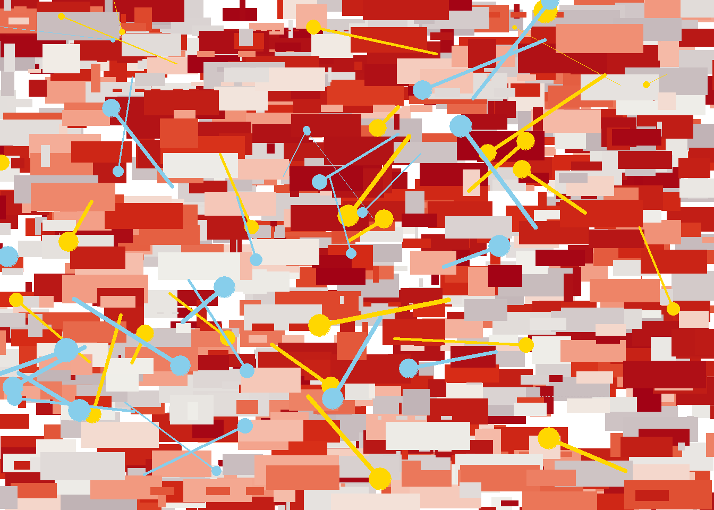
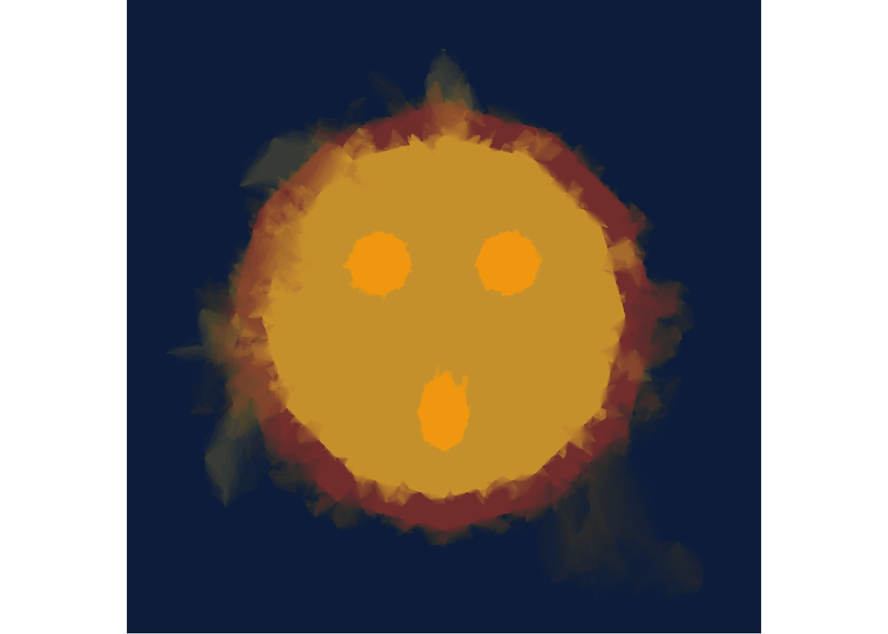

library(tidyverse)
library(ggthemes)
library(scales)
library(ambient)
library(tictoc)
library(ggthemes)Library and function load
For art piece 1
cart_styled_plot <- function(data = NULL, palette) {
ggplot(
data = data,
mapping = aes(
x = x0,
y = y0,
xend = x1,
yend = y1,
colour = shade,
size = size
)) +
# set x and y axis limits from 0 to 1 which prevents expansion and keeps OOB values
scale_y_continuous(
expand = c(0, 0),
limits = c(0, 1),
oob = scales::oob_keep
) +
scale_x_continuous(
expand = c(0, 0),
limits = c(0, 1),
oob = scales::oob_keep
) +
# use colors from the given palette
scale_colour_gradientn(colours = palette) +
# scale the
scale_size(range = c(0, 10)) +
theme_void() +
guides(
colour = guide_none(),
size = guide_none(),
fill = guide_none(),
shape = guide_none()
)
}# this function just makes random data
sample_data <- function(seed = NULL, n = 100){
if(!is.null(seed)) set.seed(seed)
dat <- tibble(
x0 = runif(n),
y0 = runif(n),
x1 = x0 + runif(n, min = -.2, max = .2),
y1 = y0 + runif(n, min = -.2, max = .2),
shade = runif(n),
size = runif(n),
shape = factor(sample(0:22, size = n, replace = TRUE))
)
}# grab color palette samples from ggthemes
sample_canva <- function(seed = NULL, n = 4) {
if(!is.null(seed)) set.seed(seed)
sample(ggthemes::canva_palettes, 1)[[1]] |>
(\(x) colorRampPalette(x)(n))()
}For art piece 2
edge_length <- function(x1, y1, x2, y2) {
#euclidian distance
sqrt((x1 - x2)^2 + (y1 - y2)^2)
}
edge_noise <- function(size) {
# makes a random number from the input
runif(1, min = -size/2, max = size/2)
}
sample_edge_l <- function(polygon) {
# sample an index from polygon edge list with prob proportional to edge length
sample(length(polygon), 1, prob = map_dbl(polygon, ~ .x$seg_len))
}
insert_edge_l <- function(polygon, noise) {
# put new point on a random edge of the polygon
#select random edge based on length
ind <- sample_edge_l(polygon)
#get length of edge
len <- polygon[[ind]]$seg_len
#get coords of point
last_x <- polygon[[ind]]$x
last_y <- polygon[[ind]]$y
# Handle wraparound for the last point by determining index
next_ind <- if(ind == length(polygon)) 1 else ind + 1
#get coords to next point
next_x <- polygon[[next_ind]]$x
next_y <- polygon[[next_ind]]$y
#get new point coords and add some noise
new_x <- (last_x + next_x) / 2 + edge_noise(len * noise)
new_y <- (last_y + next_y) / 2 + edge_noise(len * noise)
#list of new points
new_point <- list(
x = new_x,
y = new_y,
seg_len = edge_length(new_x, new_y, next_x, next_y)
)
#update segment length
polygon[[ind]]$seg_len <- edge_length(
last_x, last_y, new_x, new_y
)
# Insert new point in list
# Handle insertion for last position
if(ind == length(polygon)) {
c(polygon, list(new_point))
} else {
c(
polygon[1:ind],
list(new_point),
polygon[-(1:ind)]
)
}
}
grow_polygon_l <- function(polygon, iterations, noise, seed = NULL) {
# apply the insert_edge function to polygon and make it more detailed/noisy
if(!is.null(seed)) set.seed(seed)
# insert edge for each iteration
for(i in 1:iterations) polygon <- insert_edge_l(polygon, noise)
return(polygon)
}
grow_multipolygon_l <- function(base_shape, n, seed = NULL, ...) {
# make multiple polygons by applying grow_polygon to the base shape
if(!is.null(seed)) set.seed(seed)
# initialize list
polygons <- list()
# loop to make polygons
for(i in 1:n) {
# make the base shape with given parameters
polygons[[i]] <- grow_polygon_l(base_shape, ...) |>
# transpose strucutre, make tibble, and unlist
transpose() |>
as_tibble() |>
mutate(across(.fn = unlist))
}
# put all polygon tibbles into one
polygons <- bind_rows(polygons, .id = "id")
polygons
}
show_multipolygon <- function(polygon, fill, alpha = .02, ...) {
# make visualization
ggplot(polygon, aes(x, y, group = id)) +
# draw polygons with no outline
geom_polygon(colour = NA, alpha = alpha, fill = fill, ...) +
# aspect ratio equalizer
coord_equal() +
theme_void()
}smudged_circle_multi <- function(center_x = 0, center_y = 0, radius = 1, seed = 123,
noise1 = 0, noise2 = 2, noise3 = 0.5, n_points = 12) {
set.seed(seed)
# Create circular base shape as list format
theta <- seq(0, 2*pi, length.out = n_points + 1)[1:n_points]
# Create base polygon
base_polygon <- list()
for(i in 1:n_points) {
next_i <- if(i == n_points) 1 else i + 1
x_curr <- center_x + radius * sin(theta[i])
y_curr <- center_y + radius * cos(theta[i])
x_next <- center_x + radius * sin(theta[next_i])
y_next <- center_y + radius * cos(theta[next_i])
base_polygon[[i]] <- list(
x = x_curr,
y = y_curr,
seg_len = edge_length(x_curr, y_curr, x_next, y_next)
)
}
# put noise onto base polygon
base <- base_polygon |>
grow_polygon_l(iterations = 60, noise = noise1)
# make list to store set of polygons
polygons <- list()
ijk <- 0
# make set of smudged circles
for(i in 1:3) {
# apply second noise
base_i <- base |>
grow_polygon_l(iterations = 50, noise = noise2)
for(j in 1:3) {
# apply second noise again
base_j <- base_i |>
grow_polygon_l(iterations = 50, noise = noise2)
# grow 10 polygons per intermediate-base with third noise level
for(k in 1:10) {
ijk <- ijk + 1
final_polygon <- base_j |>
grow_polygon_l(iterations = 500, noise = noise3)
# Convert last polygon to tibble of x an y coords
polygons[[ijk]] <- tibble(
x = map_dbl(final_polygon, ~ .x$x),
y = map_dbl(final_polygon, ~ .x$y)
)
}
}
}
# Return as data frame with id column
bind_rows(polygons, .id = "id")
}Art piece 1
Title: Cartesian Abstraction
dat1 <- sample_data(n = 1000, seed = 935) %>%
mutate(y1 = y0, size = size/3)
dat2 <- sample_data(n = 25, seed = 346)
dat3 <- sample_data(n = 25, seed = 789)
cart_styled_plot(palette = sample_canva(seed = 1111)) +
geom_segment(data = dat1, linetype = "3432") +
geom_point(data = dat2 |> mutate(size = size/5), color = "gold") +
geom_segment(data = dat2 |> mutate(size = size/100), lineend = "round",
colour = "gold") +
geom_point(data = dat3 |> mutate(size = size/5), color = "skyblue") +
geom_segment(data = dat3 |> mutate(size = size/100), lineend = "round",
colour = "skyblue") 
Museum Description
This piece is an abstract work representing the concept of chaotic order. There are two main features of the piece driving this. The first part of the piece is compromised of many varying rectangles with an appealing red and grey color pattern. While these rectangles may seem chaotically spread across the artwork, they come together to form an interesting background that works nicely. The second part of the piece is compromised of randomly dispersed circles with line segments projecting a path for them to follow. The circles appear more chaotic than the rectangles because there are less of them and they do not all form a union to create a bigger picture. However, they still have some semblance of order because they each have their own line to follow. The background is like life, and each circle is an individual. While life may appear chaotic, it all comes together to serve as a common backdrop for each individual. Each individual will not explore every single thing that life has to offer, but they will still explore what they can while following their own path.
Description of code choices
This piece was made primarily with Danielle Navaro’s functions from her workshop, with a couple small tweaks. Both sample_data() and sample_canva() are the same as they are in the workshop, but I have modified polar_styled_plot() and changed it to cartesian_style_plot() by simply removing the coord_polar() line of the code.
The first part of the art involves creating three data sets using the sample_data() function. These are used to plot the different shapes that make up the art. dat1 is for the background rectangle (of which there are 1000). It also has a mutate() to make the rectangles smaller and to ensure they start and end on the same point of the y-axis by setting y1 = y0. dat2 and dat3 are for the circles and line segments, with 25 for each dataset. The seeds for each data set didn’t have much solid reasoning behind them. I used 935 for dat1 as a reference to Group 935 from Call of Duty Zombies and the other two were just sequential numbers.
The art is then created using the cart_styled_plot() function. I chose a palette using the sample_canva() function and played around with seeds until I found the red and grey combination that I really liked. I then created the rectangle background using geom_segment() with the dat1 datset and a linetype adjustment. Using dat2 and dat3, the gold and blue circles and line segments were created with geom_point() and geom_segment(), as well adjusting their sizes by using mutate(). Points had their size reduced much less than the line segments did, and the line segments were given round ends using the lineend option.
Art piece 2
Title: The Wandering Caretaker
# Create each component with the multi-polygon smudged effect
face_border_data <- smudged_circle_multi(0, 0, 1.0, seed = 40, noise1 = 0, noise2 = 2, noise3 = 0.5)
face_inner_data <- smudged_circle_multi(0, 0, 0.85, seed = 43, noise1 = 0, noise2 = 1.8, noise3 = 0.4)
left_eye_data <- smudged_circle_multi(-0.3, 0.25, 0.15, seed = 44, noise1 = 0, noise2 = 1.5, noise3 = 0.3, n_points = 8)
right_eye_data <- smudged_circle_multi(0.3, 0.25, 0.15, seed = 44, noise1 = 0, noise2 = 1.5, noise3 = 0.3, n_points = 8)
mouth_data <- smudged_circle_multi(0, -0.3, 0.12, seed = 46, noise1 = 0, noise2 = 1.5, noise3 = 0.35, n_points = 8)
#stretch mouth vertically
mouth_data$y <- mouth_data$y * 1.5 # stretch to make oval# Create the layered plot
plot_base <- ggplot() +
coord_equal() +
theme_void() +
theme(
panel.background = element_rect(fill = "#0C1C3A", color = NA),
plot.background = element_rect(fill = "#0C1C3A", color = NA)
) +
xlim(-1.35, 1.35) +
ylim(-1.35, 1.35)
# Low alpha helps with smudged effect
final_plot <- plot_base +
# Face border (brown)
geom_polygon(data = face_border_data, aes(x = x, y = y, group = id),
colour = NA, alpha = 0.02, fill = "#8B4513") +
# Face inner (golden)
geom_polygon(data = face_inner_data, aes(x = x, y = y, group = id),
colour = NA, alpha = 0.025, fill = "#DAA520") +
# Left eye (orange)
geom_polygon(data = left_eye_data, aes(x = x, y = y, group = id),
colour = NA, alpha = 0.03, fill = "#FFA500") +
# Right eye (orange)
geom_polygon(data = right_eye_data, aes(x = x, y = y, group = id),
colour = NA, alpha = 0.03, fill = "#FFA500") +
# Mouth (orange)
geom_polygon(data = mouth_data, aes(x = x, y = y, group = id),
colour = NA, alpha = 0.03, fill = "#FFA500")
final_plot
Museum Description
This piece is meant to be the mask of Bard from the game League of Legends. Bard is a cosmic figure that maintains harmony throughout the universe. The wispy nature of the art represents his affiliation with the cosmos, and the dark blue background symbolizes the night sky. His mask is created from trinkets and fabrics, but underneath is a powerful entity that seeks to serve the greater good.
Description of code choices
This piece was made by referring to the Polygon Tricks lesson by Danielle Navaro. Specifically, I took the smudged_hexagon() function and, using Claude for assistance, converted it to a smudged_circle_multi() function that could plot multiple circles at once. It uses the same helper functions as smudged_hexagon(), with insert_edge_l() slightly altered to accommodate for the circular shape instead of the hexagonal one.
Each circle is given different properties to create the mask.
The brown outermost circle is given a (0,0) coordinate set so it is centered, and a radius of 1 so it is the biggest circle. The seed was messed around with until a suitable wispy pattern was found, and the noise values were set to the same default ones as were used in
smudged_hexagon().The golden circle is also given a (0,0) coordinate set to be centered, with a smaller radius than the previous circle so it would be inside of it. The noise values were a bit below the default ones since the shape is a little smaller.
The eyes are given different coordinate sets so that they would be off-center but mirrored horizontally. They have a much smaller radius than the previous two circles (dare I say, the rough size of eyes on a mask). The noise values are again a bit smaller since the shapes are smaller, and the number of points that create the base circle are reduced from 12 to 8 since smaller polygons having less edges isn’t as noticeable.
The mouth is given different coordinate sets as well, but is only moved downwards from the center. It has a slightly smaller radius than the eyes, but the polygon is stretched vertically to look more like a mouth shape. The noise3 value is set slightly higher than the eyes to give it a little more of the wispyness. n_points was again set to 8 for similar reasons as the eyes.